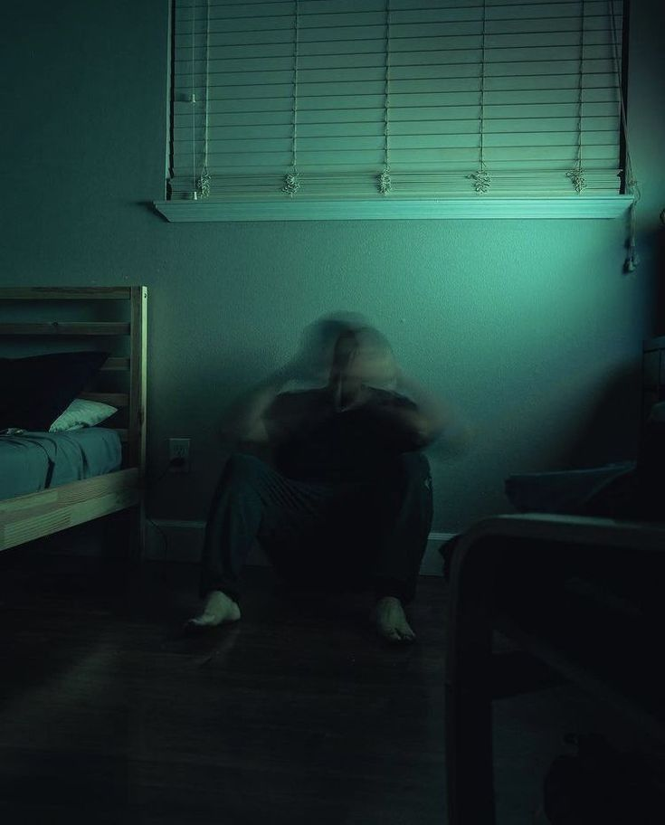

Blog Stories
Honest stories about surviving your 20s
The Day the Clock Stopped: Surviving Sudden Loss in Your Twenties
.jpeg)
The rain wasn’t cinematic; it was just a dull, rhythmic drizzle against the windshield. One minute, Clara and Liam were laughing at a terrible radio song, arguing over who got to pick the next track on their drive home. The next, a blinding flash of high beams crossed the center line. There was no time to scream—just the deafening, metallic crunch of folding steel and shattering glass.When the spinning stopped, the silence was absolute.Clara escaped the wreckage with a fractured collarbone and deep bruises, but Liam remained pinned in the driver's seat. Trapped by her jammed seatbelt, Clara could do nothing but reach across the console and hold his hand. She watched, completely helpless, as his breathing grew shallow and his eyes lost focus. By the time the distant wail of sirens finally cut through the dark, his hand had gone cold. He was twenty-four.The months that followed felt like living underwater. While her peers were navigating corporate promotions, apartment hunting, and bad dates, Clara was picking out a burial suit and attending grief counseling. The contrast was agonizing. She felt a profound, isolating loneliness, utterly severed from the carefree twenty-something world around her. She was consumed by survivor's guilt and a paralyzing self-doubt, constantly wondering why she had been spared.One afternoon, Clara ventured into the garage and found a half-finished wooden coffee table Liam had been building. It was rough, uneven, and missing its final coat of varnish. Looking at the raw wood, a painful but clear truth hit her: Liam’s life wasn’t the only thing left unfinished—the version of herself she had built with him was gone too.Tragedy in your twenties violently strips away the youthful illusion of invincibility. You are forced to confront the absolute fragility of life long before you feel emotionally equipped to handle it. True healing does not mean forgetting, nor does the grief ever truly get lighter. Instead, you slowly learn to build a bigger, more resilient version of yourself around that permanent ache. Clara realized that honoring Liam’s memory wasn’t about staying frozen in the wreckage of that rainy night. It meant finding the terrifying courage to carry his love forward into the unwritten, messy chapters of the life she still had left to live
The Myth of the Right Turn: Redefining Career Pivots at 26

By all external metrics, Priya was winning. At twenty-six, she had secured a corner cubicle at a prestigious corporate consulting firm, a salary that allowed her to buy groceries without checking her banking app, and a sleek LinkedIn profile that invited endless congratulations. But every morning, sitting in her idling car in the office parking garage, she felt a profound, suffocating emptiness. She had spent four years of college and three years of grueling seventy-hour workweeks climbing a ladder, only to look up and realize it was leaning against the wrong wall. The tech-heavy corporate grind was draining her soul, but the fear of walking away—of admitting that the blueprint she had built her entire identity upon was wrong—left her paralyzed with self-doubt.The turning point arrived not with a dramatic resignation, but during a quiet Tuesday lunch break. While scrolling through her feed, she saw a former colleague’s post announcing a major promotion in the exact department Priya was currently trying to escape. The caption read, “Exactly where I’m meant to be.” Instead of feeling inspired, Priya felt a wave of envy so intense it made her physically ill—not because she wanted the promotion, but because she desperately wanted that certainty. That afternoon, she admitted the terrifying truth to herself: she was staying in a career she hated simply because she was terrified of the awkward phase of starting over.Two weeks later, Priya took a massive leap. She turned down a looming promotion, negotiated a transition to a part-time remote time role to keep her bills paid, and enrolled in a rigorous local user-experience (UX) design bootcamp. The shift was far from glamorous. She went from being the resident expert in her office to a complete beginner, fumbling through design software alongside nineteen-year-olds. Her friends were buying apartments and booking trips to Tulum, while she was budgeting down to the penny and spending her Friday nights staring at wireframes. The imposter syndrome was loud, and the financial stress was an uninvited guest in her apartment every month.But three months into her new path, while helping a local non-profit redesign their community platform, Priya noticed something unfamiliar: she had forgotten to look at the clock. The suffocating weight in her chest was gone, replaced by a genuine, electric curiosity. She wasn't winning anyone's approval on social media, but she was finally building something that felt authentic to who she was actually becoming.
The Cost of Keeping It Together: When High Functioning Looks Like Healing

To everyone else, Marcus was the definition of "having it together." At twenty-five, he was the friend who never missed a birthday, the employee who answered emails within four minutes, and the guy who hit the gym at 6:00 AM every single day. His lifestyle looked disciplined, healthy, and highly aspirational on a screen. What the screen hid, however, was the exhausting reality that Marcus’s flawless routine wasn't driven by self-love; it was fueled by a desperate, paralyzing fear of letting his mind slow down. He discovered that if he kept himself constantly moving, he could outrun the heavy, suffocating anxiety that had been quietly building in his chest since graduation.The breaking point happened on an ordinary Thursday evening. After completing a flawless presentation at work and hosting a dinner for his friends, Marcus walked into his quiet apartment, closed the door, and completely fell apart. He sat on the kitchen floor, his heart racing so fast it felt violent, unable to breathe. There was no external trigger—no bad news, no failure, no crisis. He was simply exhausted from the crushing mental weight of maintaining his own perfection. He realized that high-functioning anxiety is a lonely prison; because you look like you are thriving on the outside, no one thinks to ask if you are surviving on the inside.The next morning, Marcus didn't go to the gym. Instead, he made an appointment with a therapist. The initial weeks of counseling were deeply uncomfortable. He had to learn to sit in the quiet without a task to complete, and he had to confront the profound self-doubt he had been hiding behind his achievements. He had to text his friends and say, "I’m going through a really tough time right now and need some space," a vulnerability that felt more terrifying than any corporate presentation. He stopped treating his mental health like a checklist to master and started treating it like a relationship to nurture.Healing didn't mean his anxiety instantly vanished. It meant he stopped using busyness as a shield to ignore it. He started setting boundaries on his time, letting his apartment be messy occasionally, and allowing himself to feel tired without feeling guilty.
You Don’t Have to Have It All Figured Out
Clara carried grief, Priya faced the fear of starting again, and Marcus learned that looking successful is not the same as feeling okay. Their struggles were different, but each discovered the same truth: surviving your twenties is not about following a perfect timeline or always appearing strong. It is about allowing yourself to grieve, change direction, ask for help, and grow at your own pace.
Your twenties may not look polished or certain—and that does not mean you are failing. You are still becoming who you are. Give yourself permission to pause, begin again, and live a life that feels honest instead of one that only looks impressive.
And many more